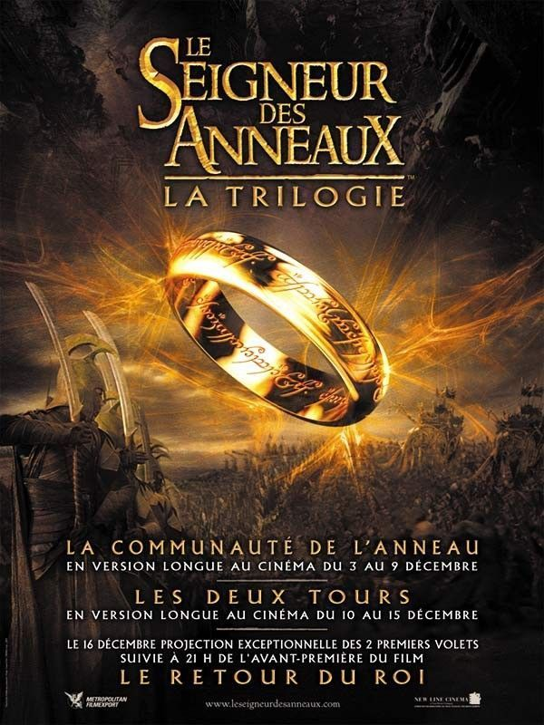
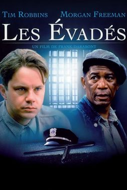
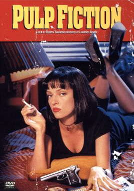
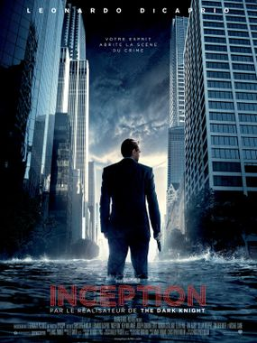
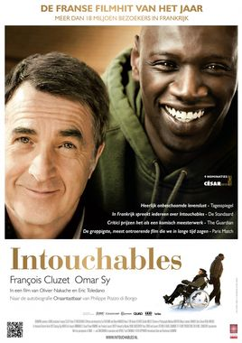

Films Cultes : Forrest Gump Le Seigneur des anneauxLes EvadésStar warsPulp FictionInceptionIntouchables

De Robert Zemeckis
Avec Tom Hanks, Gary Sinise, Robin Wright
Natiionalité: américain
Synopsis :
Le film relate la vie mouvementée de Forrest Gump, un « simple d'esprit » originaire de l'Alabama qui fut impliqué, le plus souvent involontairement, dans les principaux événements qui marquèrent l'histoire des États-Unis d'Amérique entre les années 1950 et les années 1980.Récompense :
Le film est récompensé par de multiples nominations et récompenses, avec notamment six Oscars du cinéma en 1995 (dont ceux du meilleur film, du meilleur réalisateur pour Robert Zemeckis, et du meilleur acteur pour Tom Hanks) 1995. En 2011, le film est sélectionné par la National Film Registry de la Bibliothèque du Congrès pour y être conservé, comme étant « culturellement, historiquement ou esthétiquement important».Autre info :
Voir la Bande annonceCritiques spectateurs
Haut-de-page
Le seigneur des anneaux, (2001-2003)
De Peter Jackson
Avec Elijah Wood, Sean Astin, Ian McKellen
Nationalité: americain, neo-zelandais
De Peter Jackson
Avec Elijah Wood, Sean Astin, Ian McKellen
Nationalité: americain, neo-zelandais
Synopsis :
L'histoire commence lorsque, sur la Terre du Milieu, le magicien Gandalf le Gris découvre que l'anneau que possède le jeune Hobbit Frodon Sacquet, qui lui a été légué par son oncle Bilbon et qui permet de se rendre invisible, est en réalité l'Anneau unique recherché avidement par le seigneur ténébreux Sauron car il lui permettrait de retrouver toute sa puissance. Afin d'éviter que Sauron ne récupère l'anneau, Frodon et ses huit compagnons, la Communauté de l'Anneau, entament un périlleux voyage dans le but de le détruire.Récompense :
Les trois films ont été un grand succès commercial, rapportant au total presque trois milliards de dollars lors de leur sortie dans les salles. Ils ont globalement été acclamés par la critique, et ont été fortement récompensés, remportant notamment dix-sept Oscars sur trente nominations. Le dernier film de la trilogie, Le Retour du roi, remporta les onze Oscars auxquels il était nommé, égalant Ben-Hur et Titanic pour le record du plus grand nombre d'Oscars reçus pour un film. La trilogie reçut de nombreux prix pour la distribution, pour les effets spéciaux et pour l'infographie. Les films ont également apporté un regain d'intérêt et une reconnaissance du grand public pour l'œuvre de Tolkien, malgré quelques controverses sur les différences entre les livres et leur adaptation. Par la suite, après le succès de la trilogie, Peter Jackson décide de s'associer au studio Metro-Goldwyn Mayer en plus de la New Line afin d'adapter Le Hobbit au cinéma, entre 2012 et 2014.Autre info :
Voir la Bande annonceCritiques spectateurs
Haut-de-page
Les Évadés, (1995)
De Frank Darabont
Avec Tim Robbins, Morgan Freeman
Nationalité: américain
De Frank Darabont
Avec Tim Robbins, Morgan Freeman
Nationalité: américain
Synopsis :
En 1947, Andy Dufresne, un jeune banquier, est condamné à la prison à vie pour le meurtre de sa femme et de son amant. Ayant beau clamer son innocence, il est emprisonné à Shawshank, le pénitencier le plus sévère de l'Etat du Maine. Il y fait la rencontre de Red, un Noir désabusé, détenu depuis vingt ans. Commence alors une grande histoire d'amitié entre les deux hommes...Récompense :
Le film a été un échec commercial lors de sa sortie au cinéma, mais a depuis acquis le statut de film culte, figurant notamment dans la liste des 100 meilleurs films de l'American Film Institute ainsi qu'à la première place du classement des meilleurs films de l'Internet Movie Database. En 2015, le film est sélectionné par le National Film Preservation Board pour conservation à la Bibliothèque du Congrès aux États-Unis, en raison de son intérêt « culturel, historique, ou esthétique important ».Autre info :
Voir la Bande annonceCritiques spectateurs
Haut-de-page

De George Lucas
Avec Mark Hamill, Harrison Ford, Carrie Fisher
Nationalité : américain
Synopsis :
Il y a bien longtemps, dans une galaxie très lointaine... La guerre civile fait rage entre l'Empire galactique et l'Alliance rebelle. Capturée par les troupes de choc de l'Empereur menées par le sombre et impitoyable Dark Vador, la princesse Leia Organa dissimule les plans de l'Etoile Noire, une station spatiale invulnérable, à son droïde R2-D2 avec pour mission de les remettre au Jedi Obi-Wan Kenobi. Accompagné de son fidèle compagnon, le droïde de protocole C-3PO, R2-D2 s'échoue sur la planète Tatooine et termine sa quête chez le jeune Luke Skywalker. Rêvant de devenir pilote mais confiné aux travaux de la ferme, ce dernier se lance à la recherche de ce mystérieux Obi-Wan Kenobi, devenu ermite au coeur des montagnes désertiques de Tatooine...Récompense :
Le film n'a pas eu de récompense mais le film est accueilli très positivement par la critique américaine. Roger Ebert du Chicago Sun-Times indique que le film est une expérience transcendantale et trouve les effets spéciaux bien meilleurs que ceux de 2001, l'Odyssée de l'espace (1968). Il estime également que la force du film vient de son scénario. Vincent Canby de The New York Times indique que selon lui, il s'agit du film « le plus complexe, le plus cher et le plus beau jamais réalisé ». A.D. Murphy du magazine Variety décrit le film comme « magnifique » et affirme que George Lucas a réussi dans sa tentative de créer une « grande aventure fantastique » sur le modèle des séries télévisées de son enfance.Autre Info :
Voir la Bande annonceCritiques spectateurs
Haut-de-page
Pulp Fiction, (1994)
De Quentin Tarantino
Avec John Travolta, Samuel L.Jackson
Nationalité: américain
De Quentin Tarantino
Avec John Travolta, Samuel L.Jackson
Nationalité: américain
Synopsis :
L’odyssée sanglante et burlesque de petits malfrats dans la jungle de Hollywood à travers trois histoires qui s’entremêlent.Récompense :
Il est récompensé par la Palme d'or au Festival de Cannes 1994, ainsi que par l'Oscar du meilleur scénario original l'année suivante, il est un succès aussi bien critique que commercial, établissant ainsi définitivement la réputation de Tarantino. Il est, selon le classement établi en 2007 par l'AFI, le 94e meilleur film américain de tous les temps. L'AFI le classe également à la 7e place de sa liste des meilleurs films de gangsters. En 2013, le film est sélectionné par le National Film Registry pour être conservé à la Bibliothèque du Congrès pour son « importance culturelle, historique ou esthétique ».Autre Info :
Voir la Bande annonceCritiques spectateurs
Haut-de-page
Inception, (2010)
De Christopher Nolan
Avec Leonardo DiCaprio, Marion Cotillard
Nationalité: américain, britannique
De Christopher Nolan
Avec Leonardo DiCaprio, Marion Cotillard
Nationalité: américain, britannique
Synopsis :
Dom Cobb est un voleur expérimenté – le meilleur qui soit dans l’art périlleux de l’extraction : sa spécialité consiste à s’approprier les secrets les plus précieux d’un individu, enfouis au plus profond de son subconscient, pendant qu’il rêve et que son esprit est particulièrement vulnérable. Très recherché pour ses talents dans l’univers trouble de l’espionnage industriel, Cobb est aussi devenu un fugitif traqué dans le monde entier qui a perdu tout ce qui lui est cher. Mais une ultime mission pourrait lui permettre de retrouver sa vie d’avant – à condition qu’il puisse accomplir l’impossible : l’inception. Au lieu de subtiliser un rêve, Cobb et son équipe doivent faire l’inverse : implanter une idée dans l’esprit d’un individu. S’ils y parviennent, il pourrait s’agir du crime parfait. Et pourtant, aussi méthodiques et doués soient-ils, rien n’aurait pu préparer Cobb et ses partenaires à un ennemi redoutable qui semble avoir systématiquement un coup d’avance sur eux. Un ennemi dont seul Cobb aurait pu soupçonner l’existence.Récompense :
Inception reçoit un accueil positif, les critiques ayant salué particulièrement son originalité, son casting, sa musique et ses effets visuels. Il rapporte plus de 800 millions de dollars, le classant dans les quarante plus gros succès au box-office mondial. Le film remporte quatre Oscars, dont celui de la meilleure photographie, et il est nommé à ceux du meilleur film et du meilleur scénario original.Autre Info :
Voir la Bande annonceCritiques spectateurs
Haut-de-page
Intouchable, (2011)
De Eric Toledano, Olivier Nakache
Avec François Cluzet, Omar Sy, Anne Le Ny
Nationalité: français
De Eric Toledano, Olivier Nakache
Avec François Cluzet, Omar Sy, Anne Le Ny
Nationalité: français
Synopsis :
A la suite d’un accident de parapente, Philippe, riche aristocrate, engage comme aide à domicile Driss, un jeune de banlieue tout juste sorti de prison. Bref la personne la moins adaptée pour le job. Ensemble ils vont faire cohabiter Vivaldi et Earth Wind and Fire, le verbe et la vanne, les costumes et les bas de survêtement... Deux univers vont se télescoper, s’apprivoiser, pour donner naissance à une amitié aussi dingue, drôle et forte qu’inattendue, une relation unique qui fera des étincelles et qui les rendra... Intouchables.Récompense :
Le 10 janvier 2012, Intouchables a battu un record en se classant n° 1 au box office hebdomadaire français pendant neuf semaines consécutives depuis sa sortie, classement qu'il conservera jusqu'à sa dixième semaine. Pour son rôle dans ce long-métrage, Omar Sy décroche le César du meilleur acteur en 2012. Intouchables a été présélectionné pour la nomination du meilleur film en langue étrangère aux Oscars, mais le 10 janvier 2013, les nominations officielles des Oscars 2013 ont été annoncées et Intouchables n'est finalement pas nommé.Autre Info :
Voir la Bande annonceCritiques spectateurs
Haut-de-page